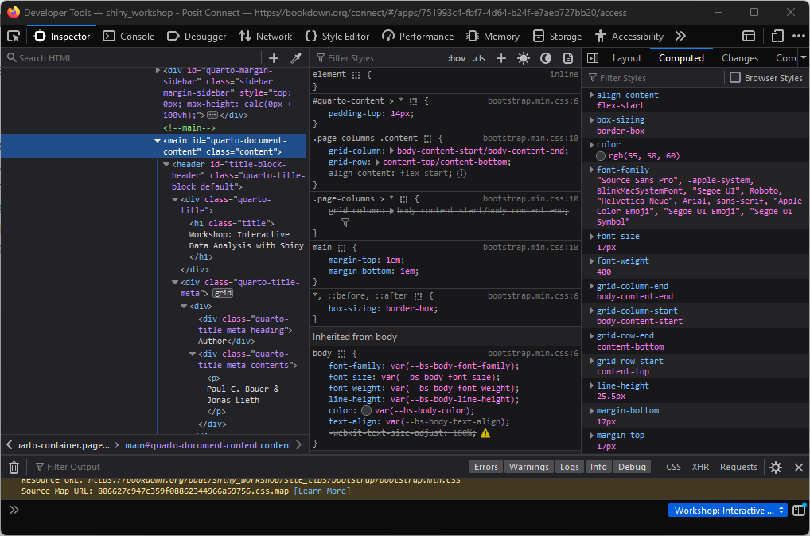
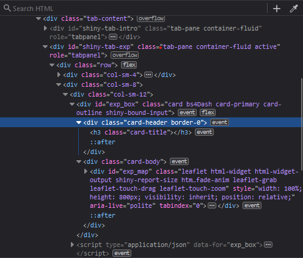

library(bs4Dash)
# UI ----
ui <- dashboardPage(title = "My Shiny App",
### Header ----
header = dashboardHeader(),
### Sidebar ----
sidebar = dashboardSidebar(),
### Body ----
body = dashboardBody(
h2("A NEW HOPE", align = "center"),
h5("It is a period of civil war.", align = "center"),
p("p creates a paragraph of text."),
tags$p("A new p() command starts a new paragraph. Supply a style attribute to change the format of the entire paragraph.", style = "font-family: 'times'; font-si16pt"),
strong("strong() makes bold text."),
em("em() creates italicized (i.e, emphasized) text."),
tags$hr(style="border-color:black;"),
tags$br(),
tags$line(),
br(),
code("code displays your text similar to computer code"),
div("div creates segments of text with a similar style. This division of text is all blue because I passed the argument 'style = color:blue' to div", style = "color:blue"),
br(),
p("span does the same thing as div, but it works with",
span("groups of words", style = "color:blue"),
"that appear inside a paragraph."))
)
# Server ----
server <- function(input, output, session) {}
shinyApp(ui, server)Theming & styling
จุดประสงค์:
- ประยุกต์ใช้ธีมในแอป Shiny
- ใช้เครื่องมือ “Inspect”
- เพิ่มanimationเวลาโหลด
- ใช้งาน CSS พื้นฐาน ทำสิ่งที่ R ไม่สามารถทำได้
การใส่ธีมใน Shiny
- ค่าเริ่มต้นของแอป Shiny ดูไม่ค่อยสวย แต่ทำไมถึงเป็นแบบนั้น
- Shiny ใช้รูปแบบเริ่มต้นจาก Bootstrap
Bootstrap
- Bootstrap เป็นเฟรมเวิร์กที่ประกอบด้วยเทมเพลตดีไซน์ที่มีพื้นฐานจาก CSS, HTML และ JavaScript
- ใช้กับเว็บไซต์ทั่วไปประมาณ 20%
- เป็นหนึ่งในโครงการ GitHub ที่ได้รับความนิยมมากที่สุด
- บางครั้งอาจจะน่าเบื่อเพราะคนใช้กันเยอะ
- Shiny รุ่นคลาสสิกใช้ Bootstrap 3
bs4Dashแพคเกจที่เราใช้สำหรับแดชบอร์ด Guerry ใช้ Bootstrap 4 (โดยเฉพาะ AdminLTE 3)
ส่วนขยายใน Shiny สำหรับการตกแต่งสไตล์
- Shiny มีส่วนขยายที่น่าสนใจมากสำหรับการเพิ่มความน่าสนใจให้กับ UI เราจะพูดถึงบางส่วนได้แก่:
bslib- ปรับแต่งธีมของ bootstrapfresh- ปรับแต่งธีมแดชบอร์ดwaiter- สร้างสปินเนอร์ที่สวยงามshinyWidgets- ประดิษฐ์วิดเจ็ตอินพุตอย่างงดงามshinyjs- ใช่ JavaScript โดยไม่ต้องรู้จัก JavaScript (แต่รู้ไว้บ้างก็ดี)
เพิ่มเติม
- Chapter 6 ของ Hadley Wickham’s “Mastering Shiny”
- Chapter 6 to 9 ของ David Granjon’s “Outstanding User Interfaces with Shiny”
การอัปเดตความรู้เกี่ยวกับแท็ก HTML
- ฟังก์ชันแท็ก HTML จะแปลง input เป็น html
- ลองรัน
h2("A NEW HOPE", align = "center")ในคอนโซลดูครับ - ฟังก์ชัน
h2()สร้างแท็ก html<h2></h2>
- ลองรัน
- แท็ก HTML ทั่วไป (เช่น
<div>) สามารถสร้างได้โดยเรียกชื่อแท็กของพวกเขาโดยตรง (เช่นdiv()) - แท็กที่ไม่ค่อยใช้ (เช่น
<article>) ใช้คอลเลกชันของรายการแท็ก (เช่นtags$article()) ที่เก็บไว้ในอ็อบเจ็กต์tags - ดูการอ้างอิงแบบเต็มสำหรับแท็ก HTML
เครื่องมือ Inspect
- เบราว์เซอร์ส่วนใหญ่มีเครื่องมือ “Inspect” สำหรับเว็บไซต์
- ช่วยให้ปรับเปลี่ยนองค์ประกอบ HTML ในแบบ real time (แท็ก HTML)
- ช่วยให้เปลี่ยนการจัดรูปแบบ CSS ของเว็บไซต์ในแบบ real time (แท็ก CSS)
- ช่วยให้เปลี่ยนเค้าโครงของเว็บไซต์ (Layout pane)
- มีอินเทอร์เฟซให้คุณมองเห็นว่า HTML ส่วนที่สนใจ อยู่ตรงไหนบนเว็บไซต์ (“Pick an element”)
- ช่วยให้เลือกสีได้โดยตรงจากเว็บไซต์ (“เลือกสี”)
วิธีเปิดตัวตรวจสอบ inspector
- เข้าชมเว็บไซต์ (เช่นเปิดแอป Shiny ในเบราว์เซอร์)
- คลิกขวาบนหน้าเว็บ (เช่น ตรงต้องการตรวจสอบ)
- เลือก “Inspect”
- หน้าต่างจะเปิดขึ้นมาให้ดูเหมือนตัวอย่างด้านล่างนี้
Tip
ถ้าในRStudio ก็คลิกขวาแล้วเลือก “Inspect Element”

ใช้เครื่องมือตรวจสอบ
- คำถาม: จากด้านบน บอกได้ไหมว่าแต่ล่ะส่วนของเครื่องมือตรวจสอบทำอะไร
- แท็ก HTML
- แท็ก CSS
- แท็กเค้าโครง
- เลือกองค์ประกอบ
- เลือกสี
- แม้ว่าเครื่องมือตรวจสอบจะดูซับซ้อน แต่สามารถใช้ในการกำหนดธีมต่าง ๆ ได้ในทุกกรณี
การกำหนดธีมด้วย bslib
- แพคเกจ
bslibสามารถใช้ควบคุมการกำหนดค่าธีมของ bootstrap ได้ - สามารถระบุธีมของ Bootstrap ได้โดยใช้ฟังก์ชัน
bs_theme() - ใน Shiny เราสามารถนำ
bs_themeมาประกอบกับเค้าโครงหน้าเพจเช่นfillPage()หรือfluidPage()
เวอร์ชัน Bootstrap กับ bslib
- ในชุดโค้ดด้านล่างนี้ เราสร้างธีม bootstrap ที่ใช้งานธีมของเวอร์ชัน Bootstrap 5 ล่าสุด:
ui <- fluidPage(
h1("Heading 1"),
h2("Heading 2"),
p("Paragraph"),
selectInput("select", "Select Input", unique(iris$Species)),
sliderInput("slider", label = "Slider", 1, 5, 3),
checkboxInput("check", "Checkbox"),
theme = bs_theme(version = 5)
)
server <- function(input, output, session) {}
shinyApp(ui, server)- ความแต่ต่างกับ bootstrap 3 มันน้อยมากแต่ก็ดูออก

Bootswatch
- ยังมีอะไรอีกพอสมควรที่สามารถปรับเปลี่ยนได้ใน
bs_theme() - ตัวอย่าง เช่น เราสามารถนำธีม Bootswatch ที่ทำไว้ก่อนแล้วมาใช้งานได้:
ui <- fluidPage(
h1("Heading 1"),
h2("Heading 2"),
p("Paragraph"),
selectInput("select", "Select Input", unique(iris$Species)),
sliderInput("slider", label = "Slider", 1, 5, 3),
checkboxInput("check", "Checkbox"),
theme = bs_theme(version = 5, bootswatch = "sketchy")
)
server <- function(input, output, session) {}
shinyApp(ui, server)Exploring theming options
- You can try out all theming options in real time by running
bs_theme_preview()
การสำรวจตัวเลือกในการกำหนดธีม
- เราลองใช้ธีมทั้งหมดได้ในแบบ real timeโดยการเรียกใช้
bs_theme_preview()
แบบฝึกหัด
ทดลองใช้ bs_theme_preview() เพื่อเรียนรู้เกี่ยวกับอาร์กิวเมนต์ต่าง ๆ ของ bs_theme() ถ้าเจอธีมที่ชอบ ลองสร้างธีมนั้นอีกครั้งโดยใช้ bs_theme()
Tip
code สำหรับอัพเดท theme มันถูกพิมพ์แสดงทั้งหมดใน console
การกำหนดธีมด้วย fresh
freshเป็นแพคเกจ R ที่ใช้สำหรับการกำหนดธีม ไม่ว่าจะเป็นแบบคลาสสิกของ Shiny, แดชบอร์ดเช่นshinydashboardและbs4Dashbs4Dashสามารถทำธีมได้อย่างง่ายด้วยแพคเกจfresh
เพิ่มธีมที่คล้ายกับ GESIS
- ขั้นตอนทำงาน:
- สร้างธีมโดยใช้
fresh::create_theme() - เพิ่มองค์ประกอบของธีม เช่น เค้าโครง สี และแบบอักษร
- ส่งวัตถุธีมเป็นอาร์กิวเมนต์ให้กับ
dashboardPage()
- สร้างธีมโดยใช้
- ในชุดโค้ดด้านล่างนี้ เราเพิ่มธีมที่คล้ายกับสไตล์เว็บของ GESIS
Tip
พิมพ์ fresh::bs4dash_ ในคอนโซลของ RStudio และลองสำรวจองค์ประกอบในการกำหนดธีมของ fresh
dash_theme <- create_theme(
bs4dash_status(
primary = "#58748f",
secondary = "#666666",
info = "#E6EAEE",
danger = "#BF616A",
warning = "#F06400",
light = "#F4F4F2",
dark = "#2c2c25"
),
bs4dash_layout(
font_size_root = "5rem",
main_bg = "#FDFDFD",
sidebar_width = "350px"
),
bs4dash_sidebar_light(bg = "#F4F4F2", color = "#000"),
bs4dash_sidebar_dark(bg = "#2c2c25", color = "#FFF"),
bs4dash_color(
orange = "#F06400",
white = "#E6EAEE",
black = "#000",
gray_600 = "#666",
gray_800 = "#333",
gray_900 = "#000",
blue = "#58748f"
),
bs4dash_font(
family_sans_serif = "Verdana",
family_base = "Georgia",
family_monospace = "Courier New"
)
)
แบบฝึกหัด
ใช้เครื่องมือที่เรียกว่า “pipette” จากเครื่องมือตรวจสอบ เพื่อหารูปแบบสีจากเว็บไซต์ที่สนใจ สร้างธีมโดยใช้สีที่เหมาะสม (และองค์ประกอบอื่น ๆ ในการกำหนดธีม) และส่งต่อไปยังแดชบอร์ด Shiny
Spinners ตัวหมุน
- ระหว่างใช้งานแอพหรือโหลด ถ้ามันไม่มีโต้ตอบก็อาจจะสร้างความรู้สึกไม่ดีกับผู้ใช้
- ในกรณีนี้ สปินเนอร์สามารถช่วยได้
- มีส่วนขยายใน Shiny หลายรูปแบบที่รองรับสปินเนอร์:
shinycssloaders,shinybusy,waiter
เริ่มสปินเนอร์ด้วย waiter
bs4Dashและwaiterทำงานร่วมกันได้ดีมาก:- เรียกใช้
tags$head(use_waiter())ที่เริ่มของdashboardBody - รวมโปรเสริมเตรียมไว้และส่งต่อให้เป็นอาร์กิวเมนต์ให้กับ
dashboardPage
- เรียกใช้
Tip
เราดูตัวอย่างสปินเนอร์ได้ผ่าน preview_spinner() หรือโดยการเข้าชม https://jslth.shinyapps.io/waiter-gallery/
preloader <- list(
html = tagList(spin_wave(), "Loading ..."),
color = "#B3DDFE"
)
ui <- dashboardPage(
...,
body = dashboardBody(
tags$head(use_waiter()),
...
),
preloader = preloader
)Custom styling
- Shiny apps can look good without a single line of non-R code
- However, to give an app the final touch, it’s hard to get around CSS
- Not least, Shiny apps are built using HTML, CSS and JavaScript, so it’s naturally a good idea to know the essentials
- The
bs4Dash::box()applies a lot of styling behind the scenes and we can inspect what exactly is happening by printing its returned object:
การปรับแต่งส่วนต่าง ๆ
- แอป Shiny สามารถดูดีได้โดยไม่ต้องมีโค้ดที่ไม่ใช่ R เลย (ว่าไงนะ55)
- อย่างไรก็ตาม เพื่อให้แอปมีความสมบูรณ์ จำเป็นต้องใช้ CSS
- แอป Shiny ถูกสร้างขึ้นโดยใช้ HTML, CSS และ JavaScript จำเป็นต้องเข้าใจสิ่งจำเป็นพื้นฐาน
bs4Dash::box()เบื้องหลังมีการปรับแต่งมากมายและเราสามารถสำรวจว่าเกิดอะไรขึ้นจริง ๆ โดยพิมพ์:
print(bs4Dash::box())<div class="col-sm-6">
<div class="card bs4Dash">
<div class="card-header">
<h3 class="card-title"></h3>
<div class="card-tools float-right">
<button class="btn btn-tool btn-sm" type="button" data-card-widget="collapse">
<i class="fas fa-minus" role="presentation" aria-label="minus icon"></i>
</button>
</div>
</div>
<div class="card-body"></div>
</div>
<script type="application/json">{"solidHeader":true,"width":6,"collapsible":true,"closable":false,"maximizable":false,"gradient":false}</script>
</div>CSS
- CSS (Cascading Style Sheets) เป็นชุดคำสั่งที่ใช้ในการกำหนดสไตล์ของเอกสาร HTML
- HTML จะจัดการการแสดงข้อมูล ส่วน CSS จะให้การจัดสไตล์ รูปแบบ
- เราสามารถเขียน HTML และ CSS ได้อย่างง่ายด้วยภายใน R โดยใช้แพคเกจ
htmltools(ดู?builderและ?browsable)
browsable(div(
div(
"This is an HTML container without styling"
),
div(
"This is an HTML container with CSS styling",
style = "
background-color: green;
color: white;
border-radius: 10px;
display: inline-block;
padding: 5px;
transform: rotate(5deg);
margin-top: 15px;
font-family: Verdana;
"
)
))This is an HTML container without styling
This is an HTML container with CSS styling
Classes and IDs
- CSS is usually defined using classes or IDs
- IDs are unique identifiers for a single UI elements and are specified using a hashtag
# - Classes can be given to multiple UI elements and are specified using a dot
.
- IDs are unique identifiers for a single UI elements and are specified using a hashtag
คลาสและไอดี
- ปกติ CSS จะถูกกำหนดโดยใช้คลาสหรือไอดี
- ไอดี จะมีความจำเพาะกับแต่ล่ะองค์ประกอบ UI และถูกระบุโดยใช้เครื่องหมาย
# - คลาสสามารถให้กับองค์ประกอบUIหลายตัว และถูกระบุโดยใช้จุด
.
- ไอดี จะมีความจำเพาะกับแต่ล่ะองค์ประกอบ UI และถูกระบุโดยใช้เครื่องหมาย
browsable(div(
tags$style(
"
#id {
color: red;
}
.cls {
color: green;
}
"
),
div("This div has an id", id = "id"),
div("This div has a class", class = "cls")
))This div has an id
This div has a class
องค์ประกอบ HTML และ CSS
- เราสามารถเปลี่ยนคุณสมบัติ CSS ขององค์ประกอบ HTML ทั้งหมดได้:
browsable(div(
tags$style(
"
p.cls {
color: blue;
}
"
),
p("Blue his house", class = "cls"),
p("With a blue little window", class = "cls"),
p("And a blue corvette", class = "cls"),
div("Green??", class = "cls"),
style = "border-style: dotted; display: inline-block;"
))Blue his house
With a blue little window
And a blue corvette
Green??
- คำถาม: ทำไม
div.clsเป็นสีเขียวไม่ใช่สีน้ำเงินหรือสีดำ? - ความรู้จากข้างต้น:
p.clsเปลี่ยนคุณสมบัติของแท็กpทั้งหมดที่มีคลาสcls#id .clsเปลี่ยนคุณสมบัติขององค์ประกอบทั้งหมดที่มีคลาสclsภายในองค์ประกอบที่มี IDid
คุณสมบัติของ CSS
- CSS สร้างขึ้นตามคุณสมบัติ
- คุณสมบัติ CSS ทั้งหมดสามารถหาได้ในเอกสาร Mozilla developer
| คุณสมบัติ | คำอธิบาย | ค่าตัวอย่าง |
|---|---|---|
color |
กำหนดสีขององค์ประกอบ | #000, สีดำ |
background-color |
กำหนดสีพื้นหลังขององค์ประกอบ | #000, สีดำ |
display |
กำหนดวิธีที่องค์ประกอบจะแสดง | inline, block, flex, grid |
width |
กำหนดความกว้างขององค์ประกอบ | 10px, 100%, 2em, 1vh |
height |
กำหนดความสูงขององค์ประกอบ | 10px, 100%, 2em, 1vh |
margin |
ระยะขอบระหว่างองค์ประกอบและองค์ประกอบหลัก | 10px, 100%, 2em, 1vh |
padding |
ระยะขอบในองค์ประกอบ | 10px, 100%, 2em, 1vh |
border-color |
กำหนดสีของเส้นขอบขององค์ประกอบ | #000, สีดำ |
border-width |
กำหนดความกว้างของเส้นขอบขององค์ประกอบ | 10px, 100%, 2em, 1vh |
border-style |
กำหนดสไตล์ของเส้นขอบขององค์ประกอบ | จุด, ขีดเขียน, ตรง, คู่ |
border-radius |
กำหนดมุมที่สวมใส | 10px, 100%, 2em, 1vh |
font-family |
กำหนดตระกูลฟอนต์ | Arial, Verdana |
font-style |
กำหนดสไตล์ฟอนต์ | ปกติ, ตัวเอียง, ตัวเอียงเอน |
font-weight |
กำหนดความหนาของฟอนต์ | ปกติ, หนา, 700 |
font-size |
กำหนดขนาดฟอนต์ | 10px, 100%, 2em, 1vh |
position |
กำหนดตำแหน่งทั่วไปขององค์ประกอบ | Absolute, relative, fixed |
z-index |
กำหนดลำดับการซ้อนทับ | ลำดับ, เช่น 1000 > 1 > 0 > -1 |
การรวม CSS ใน R
- CSS สามารถกำหนดได้ทั้งในรูปแบบของ CSS แบบอินไลน์ (
tags$style) หรือไฟล์ CSS ภายนอก - ในแอป Guerry เราใช้ไฟล์ CSS ซึ่งจัดการบางส่วนของการจัดรูปแบบ:
- เพิ่มโฟลเดอร์ที่เรียกว่า “www” ในไดเรกทอรีของแอป
- เพิ่มไฟล์ที่เรียกว่า “styles.css” เข้าไปในโฟลเดอร์นั้น
- ใน R เพิ่ม:
tags$head(includeCSS("www/styles.css"))เข้าไปในส่วนdashboardBody
ตัวอย่าง: การลบช่องว่าง
- ในหัวข้อที่ 6: การทำแผนที่ เราอาจจะสังเกตเห็นพื้นที่ว่างจำนวนมากเมื่อทำแผนที่ Leaflet
- ไม่ได้เป็นเรื่องร้ายแรง แต่เราเสียพื้นที่ที่ใช้งาน
การวินิจฉัย
- สาเหตุ:
bs4Dash::box()สงวนพื้นที่บางส่วนในส่วนหัวและส่วนbodyของมัน - เราทราบอย่างไร
- คลิกขวาที่พื้นที่ว่าง
- เปิดตัวตรวจสอบ
- มองหาคุณสมบัติ “padding” หรือ “margin” ซึ่งเป็นตัวเกี่ยวข้องพื้นที่ว่าง
- ปิดใช้งานเพื่อดูว่าจะเปลี่ยนแปลงอย่างไร

การแก้ไข
- ข่าวร้าย: เราไม่สามารถแก้ไขปัญหานี้โดยใช้ R เพียงอย่างเดียว เนื่องจากค่าพวกนี้มาจาก AdminLTE, เฟรมเวิร์ก CSS ของ
bs4Dash - ข่าวดี: เป็นตัวอย่างสำหรับการปรับแต่ง CSS เอง
- เราเพิ่ม
padding: 0px;เข้าไปในส่วนหัวของกล่องและส่วนตัวโดยตรงด้วยการใช้เครื่องมือตรวจสอบ

การแก้ไขถาวร
- การแก้ไขของเราด้วยเครื่องมือตรวจสอบจะหายไปเมื่อเราปิดหรือโหลดแท็บใหม่
- เพื่อแก้ไขถาวร เราจำเป็นต้องทำการเปลี่ยนแปลงที่ไฟล์ในคลาส HTML
- คำถาม: เราต้องแก้ไขคลาส HTML อันไหน องค์ประกอบ HTML ไหนที่รับผิดชอบในการเว้นช่องว่างที่ไม่ถูกต้อง
Tip
หากไม่แน่ใจว่าองค์ประกอบไหนทำหน้าที่อะไร ลองเลื่อนเมาส์ไปที่องค์ประกอบในแท็บ HTML แล้วจะเห็นไฮไลต์ส่วน ที่เกี่ยวข้องในที่เว็บไซต์โดยตรง

Embedding CSS
- Now that we know what properties to change and where, we can start writing CSS
- Either in a dedicated
styles.cssfile or usingtags$styleinside the UI code, we put the following CSS lines:
การฝัง CSS
- ตอนนี้ที่เรารู้ว่าคุณสมบัติที่จะเปลี่ยนและที่จะแก้ไขอยู่ตรงไหน ก็เริ่มเขียน CSS ได้
- ไม่ว่าจะอยู่ในไฟล์
styles.cssหรือใช้tags$styleภายในโค้ด UI เราเพียงเพิ่มบรรทัด CSS ต่อไปนี้:
styles.css
/* remove white space around maps in boxes */
#exp_box .card-header, #exp_box .card-body {
padding: 0em;
}- อีกนัยหนึ่ง: สำหรับคลาส
card-headerและcard-bodyภายในองค์ประกอบที่มี IDexp_boxให้ตั้งค่าขอบเขต (padding) เป็น 0 พิกเซล
แบบฝึกหัด
เปลี่ยนการจัดรูปแบบ CSS ของย่อหน้าข้อความในแท็บ “หน้าหลัก” สร้างคลาส CSS ที่ชื่อว่า par และเปลี่ยนตัวแปรฟอนต์, ขนาด, น้ำหนัก, ประเภท, การจัดวางและการชิดขอบ:
Tip
บางส่วนของคุณสมบัติ CSS ดูได้ในหัวข้อ “คุณสมบัติ CSS” แต่บางส่วนก็ใหม่ อย่างไรก็ตามแนะนำให้ดูตามแหล่งข้อมูลตามเว็บอื่นๆดูครับ ลองค้นดู
Solution
ใส่ code CSS นี้ ใน styles.css หรือในแบบ inline:
/* text formatting */
p.par {
font-family: Arial;
font-weight: 500;
font-size: 12px;
font-type: italic;
text-indent: 10px;
text-align: justify;
text-justify: inter-word;
}ใน R เราต้องเพิ่ม class par ในทุก paragraphs ใน UI tab:
p("text", class = "par")